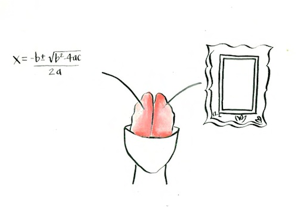
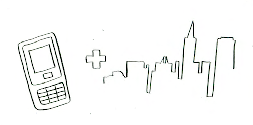
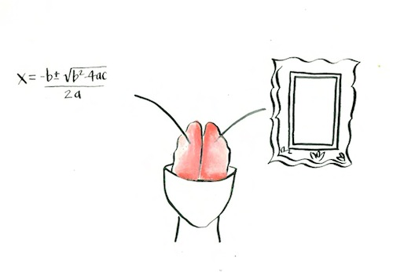
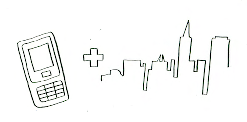

My story...
I grew up in idyllic Marin County, CA, nurtured by my dad -- a writer, teacher and thought-leader about the social, political and cultural impacts of technology -- and my mom -- a hair stylist and costumer.
My first grade teacher misinterpreted my big brown eyed stare and quiet curiosity for shyness, urging my parents to enroll me in a drama class. Little did she expect, I transformed into a musical theater kid, playing little orphan Annie three times. Once at the age of 8, again at 11 and finally at 13.
I always loved math and the process of breaking complex problems into logical parts. But I also grew up with an art teacher Grandmother who passed on a love of storytelling and painting.
I continued to straddle the techie/fuzzy divide at Stanford, majoring in Urban Studies with focus in Architecture and Urban Design. My interdisciplinary liberal arts education introduced me to 3 big loves: Jane Jacobs, Improv and Design Thinking.
Working with Eric Paulos at Intel Research Labs (summer, 2004 & 2005) served as a stepping stone from my past into my future. Urban Atmospheres brought together the world of technology that I grew up in (I had an email address at The WELL from the age of 8 and testified for the EFF when I was 10) and my love of cities by exploring the future of urban computing.
We designed and performed Urban Probes to play with the role of technology in the urban environment and observe how our interventions changed the way people interacted with each other and their surroundings.
All this led me to Google, where I have been a Program Manager in Engineering since May 2006. I design experiences, communities and environments for grassroots innovation. From leading a group of volunteers to transform the testing culture & habits of our engineering organization to building The Garage, a physical space for innovation and collaboration.
I also run a 21st Century Salon to bridge my passion for designing experiences, communities and environments with my love of food.